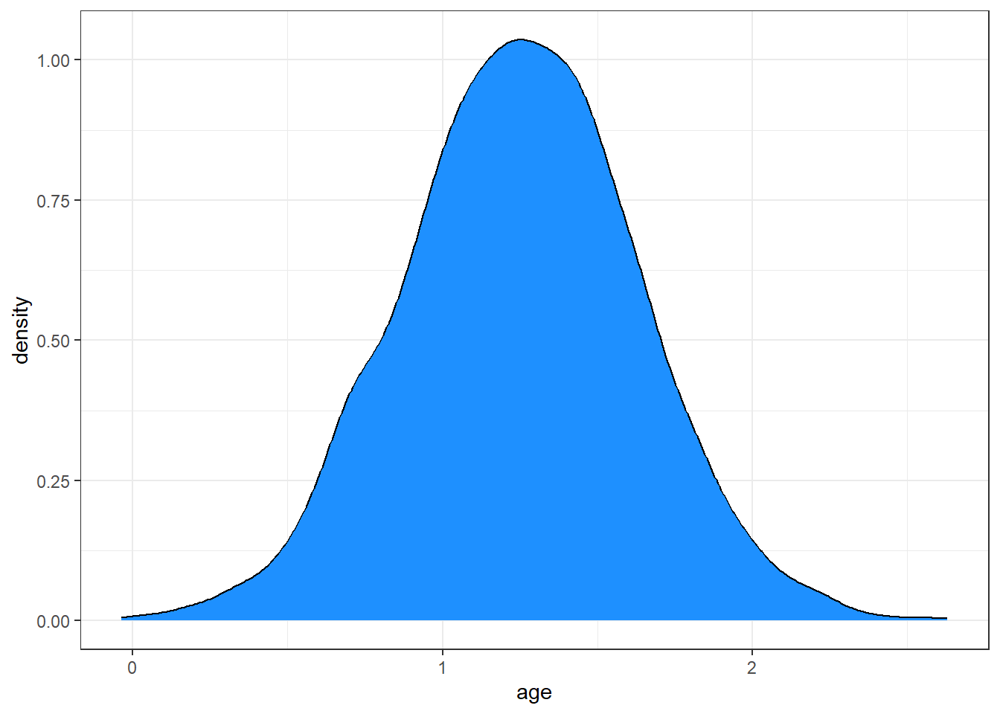
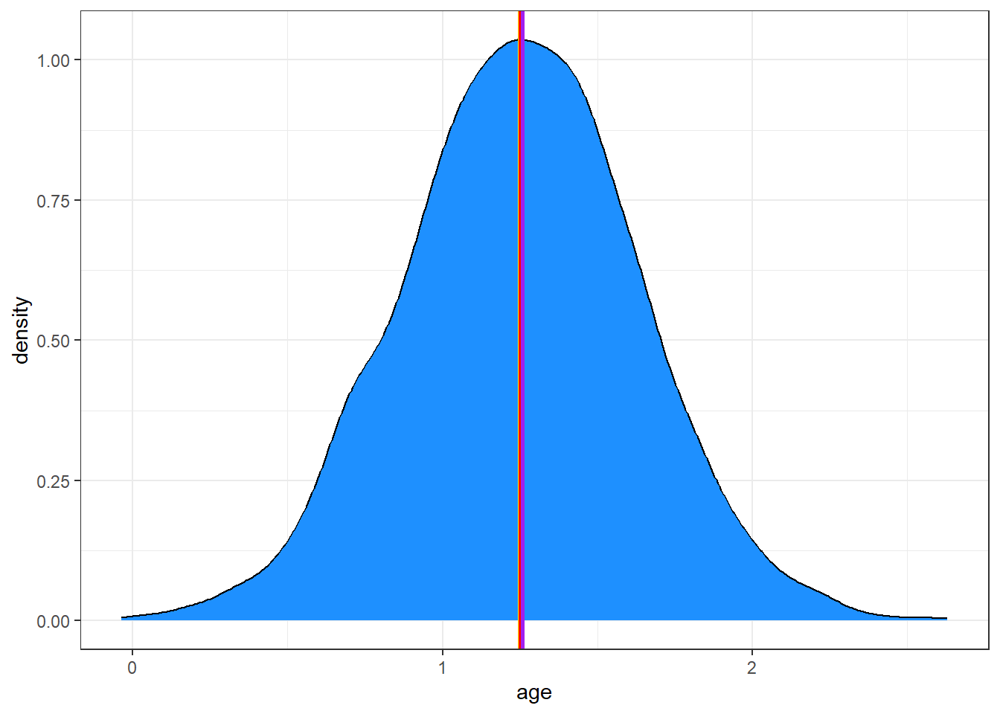
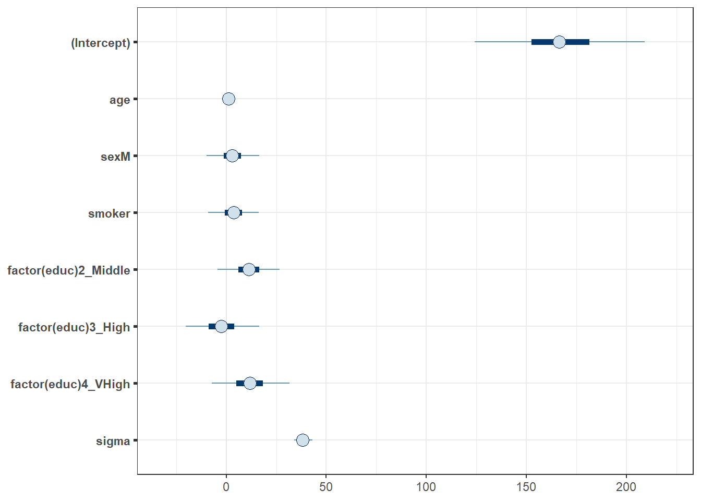
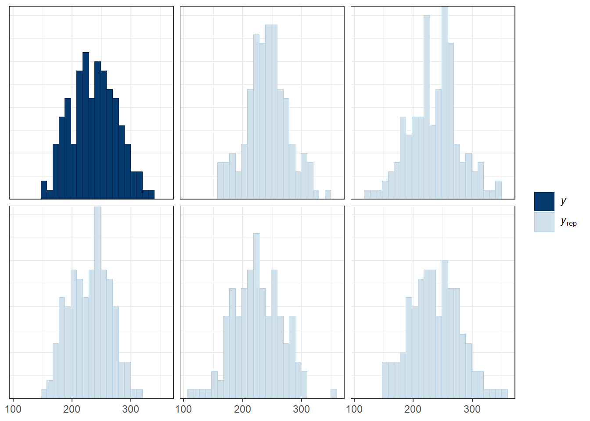
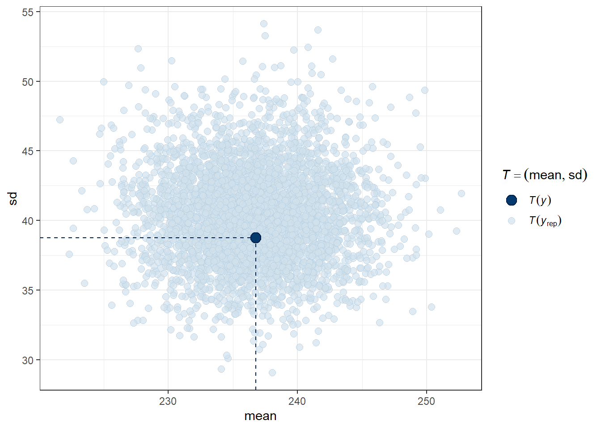

knitr::opts_chunk$set(comment = NA)
library(broom)
library(broom.mixed)
library(gt)
library(janitor)
library(mosaic)
library(bayestestR)
library(insight)
library(rstanarm)
library(conflicted)
library(tidyverse)
conflicts_prefer(dplyr::select, dplyr::filter, base::mean, base::range)
theme_set(theme_bw())33 NEW!! Bayes and a Linear Model
Almost all of this material is based on
- https://mc-stan.org/rstanarm/articles/continuous.html and
- https://easystats.github.io/bayestestR/articles/bayestestR.html and
- https://easystats.github.io/bayestestR/articles/example1.html
There’s not a lot that is truly original here. That’s a summer project.
33.1 R Setup Used Here
33.2 Return to the smalldat Example
Consider the smalldat.csv data we discussed in Chapter 22. The data includes 150 observations on 6 variables, and one of our goals was to build a model to predict total cholesterol.
smalldat <- read_csv("data/smalldat.csv", show_col_types = FALSE)| Variable | Description |
|---|---|
| subject | Subject identification code |
| smoker | 1 = current smoker, 0 = not current smoker |
| totchol | total cholesterol, in mg/dl |
| age | age in years |
| sex | subject’s sex (M or F) |
| educ | subject’s educational attainment (4 levels) |
The educ levels are: 1_Low, 2_Middle, 3_High and 4_VHigh, which stands for Very High
33.3 The Distribution of Total Cholesterol
Across the 150 observations in the smalldat data, we have the following summaries of the distribution of total cholesterol, our outcome.
favstats(~ totchol, data = smalldat) min Q1 median Q3 max mean sd n missing
150 209.25 237 265.75 332 236.78 38.76809 150 033.4 Fitting a Linear Model with lm() for Total Cholesterol
m1 <- lm(totchol ~ age + sex + smoker + factor(educ), data = smalldat)
glance(m1) |> select(r.squared, adj.r.squared, sigma,
AIC, BIC, df, df.residual, nobs) |>
gt() |> fmt_number(r.squared:sigma, decimals = 3)| r.squared | adj.r.squared | sigma | AIC | BIC | df | df.residual | nobs |
|---|---|---|---|---|---|---|---|
| 0.078 | 0.039 | 37.998 | 1525.772 | 1549.857 | 6 | 143 | 150 |
tidy(m1, conf.int = TRUE, conf.level = 0.95) |>
gt() |> fmt_number(decimals = 3)| term | estimate | std.error | statistic | p.value | conf.low | conf.high |
|---|---|---|---|---|---|---|
| (Intercept) | 167.153 | 21.639 | 7.725 | 0.000 | 124.380 | 209.926 |
| age | 1.248 | 0.379 | 3.296 | 0.001 | 0.500 | 1.996 |
| sexM | 3.153 | 6.515 | 0.484 | 0.629 | −9.725 | 16.030 |
| smoker | 3.462 | 6.526 | 0.531 | 0.597 | −9.438 | 16.363 |
| factor(educ)2_Middle | 11.330 | 7.740 | 1.464 | 0.145 | −3.970 | 26.631 |
| factor(educ)3_High | −2.202 | 9.426 | −0.234 | 0.816 | −20.834 | 16.431 |
| factor(educ)4_VHigh | 11.743 | 9.925 | 1.183 | 0.239 | −7.875 | 31.361 |
33.5 Fitting a Bayesian Linear Model
Can we fit a model for the same data using a Bayesian approach?
Yes, we can, for instance using the stan_glm() function from the rstanarm package.
set.seed(43211234) # best to set a random seed first
m2 <- stan_glm(totchol ~ age + sex + smoker + factor(educ),
data = smalldat, refresh = 0)Here the refresh = 0 parameter stops the machine from printing out each of the updates it does while sampling, which is not generally something I need to look at. Here’s what’s placed in the m2 object:
m2stan_glm
family: gaussian [identity]
formula: totchol ~ age + sex + smoker + factor(educ)
observations: 150
predictors: 7
------
Median MAD_SD
(Intercept) 166.3 21.5
age 1.3 0.4
sexM 3.1 6.5
smoker 3.8 6.3
factor(educ)2_Middle 11.4 7.7
factor(educ)3_High -2.4 9.5
factor(educ)4_VHigh 11.7 9.9
Auxiliary parameter(s):
Median MAD_SD
sigma 38.1 2.4
------
* For help interpreting the printed output see ?print.stanreg
* For info on the priors used see ?prior_summary.stanreg- The first few lines specify the fitting process.
- Next, for each coefficient, we find the median value from the posterior distribution, and the MAD_SD value, which is an indicator of variation derived from the estimated posterior distribution of the parameters, and is used as a standard error in what follows.
- Finally, we see the estimated root mean squared error (residual standard deviation)
sigma, again estimated with the median of thesigmavalues in the posterior distribution.
Using the summary() function provides some additional information about the parameter estimates, but mostly some convergence diagnostics for the Markov Chain Monte Carlo procedure that the rstanarm package used to build the estimates.
summary(m2)
Model Info:
function: stan_glm
family: gaussian [identity]
formula: totchol ~ age + sex + smoker + factor(educ)
algorithm: sampling
sample: 4000 (posterior sample size)
priors: see help('prior_summary')
observations: 150
predictors: 7
Estimates:
mean sd 10% 50% 90%
(Intercept) 167.0 21.8 139.6 166.3 195.3
age 1.2 0.4 0.8 1.3 1.7
sexM 3.1 6.7 -5.2 3.1 11.5
smoker 3.7 6.4 -4.5 3.8 12.0
factor(educ)2_Middle 11.3 7.9 1.2 11.4 21.3
factor(educ)3_High -2.2 9.6 -14.3 -2.4 10.2
factor(educ)4_VHigh 11.8 10.0 -1.1 11.7 24.8
sigma 38.2 2.3 35.4 38.1 41.3
Fit Diagnostics:
mean sd 10% 50% 90%
mean_PPD 236.8 4.4 231.0 236.7 242.4
The mean_ppd is the sample average posterior predictive distribution of the outcome variable (for details see help('summary.stanreg')).
MCMC diagnostics
mcse Rhat n_eff
(Intercept) 0.4 1.0 3208
age 0.0 1.0 3858
sexM 0.1 1.0 4725
smoker 0.1 1.0 3941
factor(educ)2_Middle 0.1 1.0 3535
factor(educ)3_High 0.2 1.0 3947
factor(educ)4_VHigh 0.2 1.0 3980
sigma 0.0 1.0 4159
mean_PPD 0.1 1.0 4324
log-posterior 0.0 1.0 1773
For each parameter, mcse is Monte Carlo standard error, n_eff is a crude measure of effective sample size, and Rhat is the potential scale reduction factor on split chains (at convergence Rhat=1).33.5.1 Extracting the Posterior
Let’s extract the coefficients of our model, using the get_parameters() function from the insight package:
posteriors <- get_parameters(m2)
head(posteriors) (Intercept) age sexM smoker factor(educ)2_Middle
1 147.0370 1.4540875 2.104415 15.0169219 19.5402757
2 190.0645 0.9457021 6.863091 -12.4867763 8.4980822
3 136.3315 1.6844863 7.994193 9.1766741 24.8636150
4 169.9511 1.1722918 3.785779 0.5804774 6.5798777
5 141.0931 1.5370710 7.006277 12.6397405 17.0076561
6 153.6542 1.3556864 22.009667 11.4591142 -0.9136777
factor(educ)3_High factor(educ)4_VHigh
1 5.941676 4.100910
2 -9.449067 20.836287
3 9.972711 12.456202
4 -7.890619 16.454040
5 7.221881 -9.123619
6 -4.333041 7.401950In all, we have 4000 observations of this posterior distribution:
nrow(posteriors)[1] 4000Let’s visualize the posterior distribution of our parameter for age.
ggplot(posteriors, aes(x = age)) + geom_density(fill = "dodgerblue")
This distribution describes the probability (on the vertical axis) of various age effects (shown on the horizontal axis). Most of the distribution is between 0.5 and 2, with the peak being around 1.25.
Remember that our m1 fit with lm() had an estimated \(\beta\) for age of 1.248, so, as is often the case, there is not a lot of difference between the two models in terms of the estimates they make.
Here’s the mean and median of the age effect, across our 4000 simulations from the posterior distribution.
mean(posteriors$age)[1] 1.249122median(posteriors$age)[1] 1.251402Again, these are very close to what we obtained from least squares estimation.
Another option is to take the mode (peak) of the posterior distribution, and this is called the maximum a posteriori (MAP) estimate:
map_estimate(posteriors$age)MAP Estimate
Parameter | MAP_Estimate
------------------------
x | 1.26Adding these estimates to our plot, we can see that they are all on top of each other:
ggplot(posteriors, aes(x = age)) +
geom_density(fill = "dodgerblue") +
# The mean in yellow
geom_vline(xintercept = mean(posteriors$age), color = "yellow", linewidth = 1) +
# The median in red
geom_vline(xintercept = median(posteriors$age), color = "red", linewidth = 1) +
# The MAP in purple
geom_vline(xintercept = as.numeric(map_estimate(posteriors$age)), color = "purple", linewidth = 1)
33.5.2 Describing Uncertainty
We might describe the range of estimates for the age effect.
range(posteriors$age)[1] -0.03663079 2.63023158Instead of showing the whole range, we usually compute the highest density interval at some percentage level, for instance a 95% credible interval which shows the range containing the 95% most probable effect values.
hdi(posteriors$age, ci = 0.95)95% HDI: [0.50, 1.98]So we conclude that the age effect has a 95% chance of falling within the [0.50, 1.98] range.
33.5.3 Visualizing the Coefficients and Credible Intervals
Here is a plot of the coefficients and parameters estimated in m2, along with credible intervals for their values. The inner interval (shaded region) here uses the default choice of 50%, and the outer interval (lines) uses a non-default choice of 95% (90% is the default choice here, as it turns out.) The point estimate shown here is the median of the posterior distribution, which is the default.
plot(m2, prob = 0.5, prob_outer = 0.95)
33.6 Summarizing the Posterior Distribution
A more detailed set of summaries for the posterior distribution can be obtained from the describe_posterior() function from the bayestestR package.
A brief tutorial on what is shown here is available at https://easystats.github.io/bayestestR/articles/bayestestR.html and https://easystats.github.io/bayestestR/articles/example1.html and this is the source for much of what I’ve built in this little chapter.
describe_posterior(m2) |> print_md(decimals = 3)| Parameter | Median | 95% CI | pd | ROPE | % in ROPE | Rhat | ESS |
|---|---|---|---|---|---|---|---|
| (Intercept) | 166.28 | [124.14, 209.25] | 100% | [-3.88, 3.88] | 0% | 1.000 | 3208.00 |
| age | 1.25 | [ 0.51, 1.99] | 99.95% | [-3.88, 3.88] | 100% | 1.000 | 3858.00 |
| sexM | 3.07 | [ -9.93, 16.46] | 68.20% | [-3.88, 3.88] | 42.32% | 1.000 | 4725.00 |
| smoker | 3.75 | [ -9.12, 16.17] | 71.67% | [-3.88, 3.88] | 41.61% | 1.000 | 3941.00 |
| factor(educ)2_Middle | 11.39 | [ -4.42, 26.57] | 92.38% | [-3.88, 3.88] | 14.45% | 1.000 | 3535.00 |
| factor(educ)3_High | -2.42 | [-20.30, 16.54] | 59.70% | [-3.88, 3.88] | 31.45% | 1.000 | 3947.00 |
| factor(educ)4_VHigh | 11.70 | [ -7.24, 31.59] | 88.00% | [-3.88, 3.88] | 16.58% | 0.999 | 3980.00 |
Let’s walk through all of this output.
33.6.1 Summarizing the Parameter values
For each parameter, we have:
- its estimated median across the posterior distribution
- its 95% credible interval (highest density interval of values within the posterior distribution)
as we’ve previously discussed.
33.6.2 Probability of Direction (pd) estimates.
The pd estimate helps us understand whether each effect is positive or negative. For instance, regarding age, we see the proportion of the posterior that is in the direction of the effect’s point estimate, no matter what the “size” of the effect is, will be as follows.
n_positive <- posteriors |> filter(age > 0) |> nrow()
100 * n_positive / nrow(posteriors)[1] 99.95So we see that the effect of age is positive with a probability of 99.95%, and this is called the probability of direction and abbreviated pd.
We can also calculate this with
p_direction(posteriors$age)Probability of Direction
Parameter | pd
------------------
Posterior | 99.95%As it turns out, this pd index is usually highly correlated with the p-value from our lm() fit for age. We could almost roughly infer the corresponding p-value with a simple transformation:
pd <- 99.95
onesided_p <- 1 - pd / 100
twosided_p <- onesided_p * 2
twosided_p[1] 0.001This implies that the \(p\)-value for age in our lm() fit would be 0.001, and that is, in fact, what we got when we fit model m1.
The probability that each effect is in the direction shown by the point estimate is summarized in the pd column of our describe_posterior() results.
33.6.3 The ROPE estimates
Testing whether this distribution is different from 0 doesn’t make sense, as 0 is a single value (and the probability that any distribution is different from a single value is infinite). However, one way to assess significance could be to define an area around 0, which will consider as practically equivalent to zero (i.e., absence of, or a negligible, effect). This is called the Region of Practical Equivalence (ROPE).
The default (semi-objective) way of defining the ROPE is to use the tenth (1/10) of the standard deviation (SD) of the outcome variable totchol. This is sometimes considered a “negligible” effect size.
In our case, totchol has a standard deviation of 38.8, so the ROPE range is approximately (-3.88, 3.88), or somewhat more precisely:
rope_range(m2)[1] -3.876809 3.876809So we then compute the percentage in ROPE as the percentage of the posterior distribution that falls within this ROPE range. When most of the posterior distribution does not overlap with ROPE, we might conclude that the effect is important enough to be noted.
In our case, 100% of the age effects are in the ROPE, so that’s not really evidence of an important effect.
For smoker, though, only 42% of the effects are in the ROPE, so that’s indicative of a somewhat more substantial effect, but we’d only get really excited if a much smaller fraction, say 1%, 5% or maybe 10% were in the ROPE.
33.6.4 Convergence Diagnostics
The value of Rhat should, ideally, be 1 for each element of the model, and indicate how well the MCMC procedure converged. Generally, values of Rhat below 1.05 are good, values between 1.05 and 1.1 are OK, but values above 1.1 are too high. Here, as you can see, we don’t see any serious problems.
As for ESS, we’d like to see values of 1000 or more to ensure sufficiently stable estimates. Here, again, we’re OK.
broom.mixed::tidy(m2, conf.int = TRUE, conf.level = 0.95) |>
gt() |> fmt_number(decimals = 3)| term | estimate | std.error | conf.low | conf.high |
|---|---|---|---|---|
| (Intercept) | 166.284 | 21.546 | 124.137 | 209.245 |
| age | 1.251 | 0.374 | 0.511 | 1.992 |
| sexM | 3.074 | 6.538 | −9.929 | 16.461 |
| smoker | 3.753 | 6.328 | −9.119 | 16.175 |
| factor(educ)2_Middle | 11.388 | 7.705 | −4.423 | 26.572 |
| factor(educ)3_High | −2.421 | 9.495 | −20.296 | 16.541 |
| factor(educ)4_VHigh | 11.702 | 9.889 | −7.241 | 31.592 |
33.7 Summarizing the Priors Used
From the bayestestR package, we also have the describe_prior() and print_md() functions to get the following summary of the priors we have assumed. Since we didn’t specify anything about the priors in fitting model m2, we are looking at the default choices, which are weakly informative priors following Normal distributions. Details on the default prior choices can be found at https://mc-stan.org/rstanarm/articles/priors.html.
describe_prior(m2) |> print_md(decimals = 3)| Parameter | Prior_Distribution | Prior_Location | Prior_Scale |
|---|---|---|---|
| (Intercept) | normal | 236.78 | 96.92 |
| age | normal | 0.00 | 10.87 |
| sexM | normal | 0.00 | 195.71 |
| smoker | normal | 0.00 | 193.21 |
| factor(educ)2_Middle | normal | 0.00 | 210.79 |
| factor(educ)3_High | normal | 0.00 | 273.05 |
| factor(educ)4_VHigh | normal | 0.00 | 284.16 |
33.8 Graphical Posterior Predictive Checks
For more on these checks, visit https://mc-stan.org/rstanarm/articles/continuous.html#the-posterior-predictive-distribution-1, for example.
Here’s the first plot which compares the distribution of the observed outcome \(y\) (totchol) to several of the simulated data sets \(y_{rep}\) from the posterior predictive distribution using the same predictor values as were used to fit the model.
pp_check(m2, plotfun = "hist", nreps = 5, bins = 25)
The idea is that if the model is a good fit to the data we should be able to generate data \(y_{rep}\) from the posterior predictive distribution that looks a lot like the observed data \(y\). That is, given \(y\), the \(y_{rep}\) we generate should look plausible. We’d worry a bit if this plot showed histograms that were wildly different from one another.
Another useful plot (shown below) made using pp_check shows the distribution of a test quantity \(T(y_{rep})\) compared to \(T(y)\), the value of the quantity in the observed data. I like this scatterplot version which allows us to look at where the simulations’ mean and standard deviation fall compared to what the observed totchol values show us.
pp_check(m2, plotfun = "stat_2d", stat = c("mean", "sd"))
We can see that the cloud of simulated means and standard deviations has the observed statistics near its center, although perhaps the standard deviations are a bit higher than we might like to see, typically. Ideally, the dot would be right in the center of this cloud of simulated results.